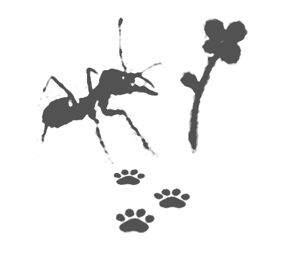
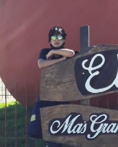

Amistad - ¿Quién soy?
"Amistad" es un proyecto artístico de un autor anónimx.
A lo largo de los años, "Amistad" ha expuesto sus obras
en numerosas galerías. Sus trabajos reúnen tanto diseño gráfico digital como
ilustraciones y fotografías, conectadas todas desde "un punto de vista antropocénico"
hablando de temas como ambientalismo, tecnología, relaciones interpersonales y
otras ansiedades.

